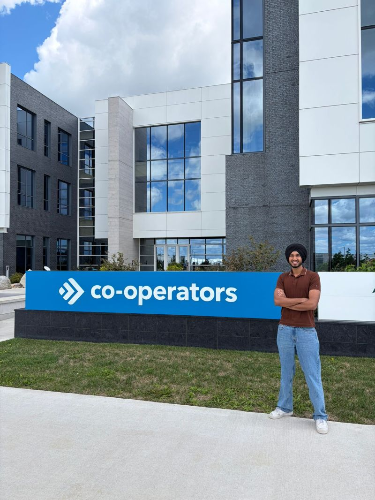

Co-operators / Guelph, Ontario / Summer 2026
Over four months on the Co-operators SRE team, I went from reading dashboards to actually building the tooling behind them. I instrumented enterprise observability, hardened privacy controls across customer session data, and stood up automated triage pipelines that turned manual review into a same day workflow.
This report walks through the environment I worked in, the goals I set for myself, the technical systems I touched across four governed environments, and how much my thinking about reliability shifted after a term spent this close to the metrics.

Co-operators is a leading Canadian financial services and insurance provider, offering home, auto, life, and business coverage alongside investment and group benefits products to millions of members across the country. Behind the customer-facing brand sits a large, distributed technology organization responsible for keeping claims, policy, and payment systems available around the clock.
That responsibility is where computing meets the business: enterprise cloud infrastructure spanning multiple environments, high-availability microservices handling sensitive financial data, and a growing SRE practice focused on operational governance and proactive telemetry rather than after-the-fact firefighting. My term sat inside that practice, working alongside engineers who treat reliability as a discipline, not an afterthought.
I got into the habit of raising scope questions and flagging risks with my team lead before I started a task instead of halfway through it, so ambiguous tickets turned into shared understanding right from the start.
I built pre execution checklists for the workflows I kept repeating, so my assumptions got tested before I dove into the work, which cut out the mid task scope corrections that slowed me down early in the term.
I pushed myself past just flagging what was broken and toward explaining why it broke and how to fix it, using telemetry to drive real solutions instead of just handing off open ended issues.
I learned how to take large, fuzzy epics and break them into structured, sequenced sub tasks, which ended up being the real difference between a project that stalls and one that ships on time.
I took scripts I originally wrote to solve one specific problem and turned them into reusable Python tools that the rest of the SRE team ended up adopting into their own workflows.
The hardest part of the term had nothing to do with any single ticket, it was the system itself. Co-operators runs a genuinely large enterprise application landscape, and in my first few weeks I found myself staring at service maps full of interconnected microservices, unsure where one system's job ended and another's began. Every dashboard I opened raised three new questions before it answered one.
What changed things wasn't one big breakthrough, it was a more structured approach to figuring things out. I started tracing one service dependency at a time, writing down what I learned as I went, and asking specific questions instead of vague ones. My team lead, my manager, and my mentor never made me feel like those questions were a burden, they treated them as part of the job. With that kind of support, the same architecture that once felt impossible to untangle became something I could navigate confidently, and eventually help other people navigate too.
That shift is honestly what I'm proudest of from this term. It didn't just make me better at my day to day work, it changed how I think about reliability and system design overall. Complexity isn't something to be afraid of, it's just something to structure.
I built and refined Dynatrace dashboards that the SRE team uses every day, closing telemetry gaps that had left parts of the application stack basically invisible during incidents. I also tracked down and fixed node level tracing bugs that were breaking trace continuity across service boundaries, which restored full visibility into how requests moved through the system.
I built an automated pipeline that takes Salesforce Code Analyzer findings and turns them into deduplicated vulnerability tickets in Jira, taking manual triage out of the security review process and cutting turnaround time by more than 90%. I also implemented full PII masking in Session Replay across customer facing journeys, so sensitive data never showed up in recorded sessions.
I contributed to C4 architecture reviews and put together Kubernetes service maps that help new engineers ramp up faster. I also helped define SLIs and KPIs for platform health, and wrote onboarding documentation that shortens the ramp up time for the next person who touches these systems.
The clearest thing I'm taking away from this term is that SRE isn't just a job title bolted onto existing engineering teams, it's a real shift in how those teams operate. Every system I touched this summer moved a step further from reactive firefighting toward something more proactive: telemetry that surfaces problems before customers notice them, pipelines that triage vulnerabilities without waiting on a human, and privacy controls that are built into the platform instead of patched on after the fact.
I'm leaving this term with more than a list of tools I know how to use. I'm leaving with a working sense of how reliable systems actually get built and kept reliable, and a much clearer picture of the kind of engineer I want to become.
None of this would have happened without the people who guided me through it. Thank you to my team lead, Andrew, for his patience through every architecture rabbit hole, to my manager, Nelson Ferreira, for his trust and support throughout the term, and to my co-op mentor, Damian, for always making time for my questions. Thank you as well to Lucy Villaflores and Charry Murison for their guidance and encouragement along the way, and to the entire Co-operators SRE team for welcoming me in and treating my contributions as real ones from day one.